CSE273 · Foundations of Machine LearningProject report
Groundwork
The foundations of machine learning, worked through on one real dataset. Six notebooks, one per unit, run on the 630,000-field Kaggle irrigation competition I entered. Every formula is checked against a library or a numerical answer, the optimisers are written from scratch, and the learning-theory bounds are tested by experiment.
Deployment and conclusionSite, Kaggle, what I learned
Every figure and number in this report comes from executing the notebooks on the real data; the figures are the files the notebooks saved, and the numbers are copied from their outputs. Code extracts are copied from the source files with their file names and line numbers.
Course and scope
The project follows the CSE273 syllabus as published unit by unit on the university notes site: Machine Learning Foundation, Pandas for Data Handling, Exploratory Data Analysis, Linear Algebra and Calculus, Statistics for ML, and Statistical Learning Theory. Each unit has one notebook, and chapter 09 maps all 57 listed topics to the notebook section that covers them. The course page does not list numbered course outcomes, so the mapping is by topic.
Why this dataset
In April 2026 I entered Kaggle's Playground Series S6E4, Predicting Irrigation Need, with a quick model (one-hot features, XGBoost, plain argmax), which scored a balanced accuracy of 0.9602 and ranked 3,391 of 4,315. Using the same data for this course makes the foundations concrete: every abstract idea gets tested on something I had already tried to solve. (The applied side, improving that submission, is my CSE274 project, Irrigate.)
01 · Project overview
Foundations, measured instead of quoted
Foundations courses tend to state results: bias and variance trade off, gradients point uphill, a 95% interval covers the truth 95% of the time, the PAC bound guarantees generalisation. With 630,000 labelled examples, each of those can be measured. Treating the full dataset as the population makes the "true" answer known, so a theorem can be checked as well as stated.
6notebooks, one per syllabus unit
57syllabus topics mapped
4optimisers written from scratch
16unit tests, all passing
The data
Item
Value
Source
Kaggle Playground Series S6E4, Predicting Irrigation Need (April 2026)
Rows
630,000 training fields (270,000 test fields without labels)
Irrigation need: Low 58.7%, Medium 37.9%, High 3.3%
Metric
Balanced accuracy (mean of the per-class recalls)
Highlights
Bias² and variance measured by training 30 trees per depth on bootstrap samples: bias² falls from 0.22 to 0.02 while variance rises, and their sum is lowest at depth 6.
Gradient descent, Momentum, RMSProp and Adam written from scratch (about 60 lines). On the irrigation data all four reach within 0.004 of scikit-learn's optimum once each has its own tuned learning rate. On the Rosenbrock valley, Adam and Momentum reach the minimum and plain GD does not.
Learning theory tested by experiment. The PAC bound for 400 decision stumps held in 300 out of 300 samples. My own library conviction certified an error rate of at most 0.5%, and on unseen data the rate was 0.37%. The No Free Lunch theorem was checked exhaustively: every learner, including one built to be wrong, averages exactly 50% over all 256 possible targets.
02 · How it's built
A small package, six notebooks, one site
The parts worth testing live in a Python package; the notebooks import it, explain each idea and run it on the data; a build script turns the executed notebooks into a website. The notebooks run unchanged on Kaggle (the first cell installs the package from GitHub).
Files
File
Job
Lines
src/groundwork/optim.py
the four optimisers, Rosenbrock and saddle test functions, softmax regression trained with any optimiser
134
src/groundwork/stats.py
numerical gradient, bootstrap CI, normal MLE and negative log-likelihood, loss functions
60
src/groundwork/theory.py
PAC and VC sample sizes, linear separability as a linear program, shattering, ERM over stumps
58
src/groundwork/data.py
finds and loads the competition data, stratified samples, one-hot matrix
69
tests/
16 tests of the package
50 + 51
notebooks/*.ipynb
the six units, with all outputs
6 notebooks
tools/build_site.py, tools/syllabus.py
the website and the course map (also used for chapter 09)
134
02 · How it's built (continued)
The notebooks on the website
Each notebook is published with its code, outputs and figures, exactly as executed. These are screenshots of the site.
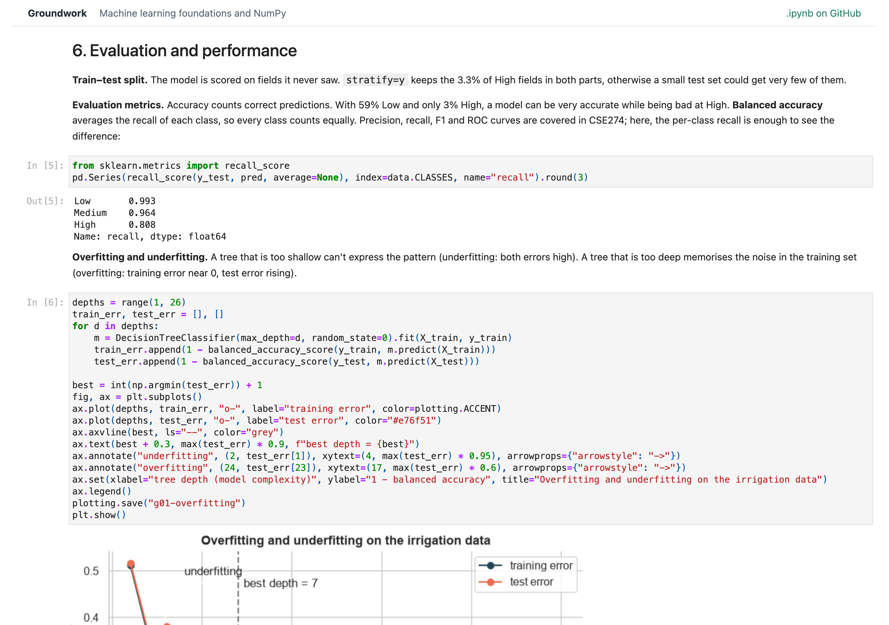
Fig. 1 · Notebook 01, evaluation and performance: the stratified split and the tree's accuracy against balanced accuracy.
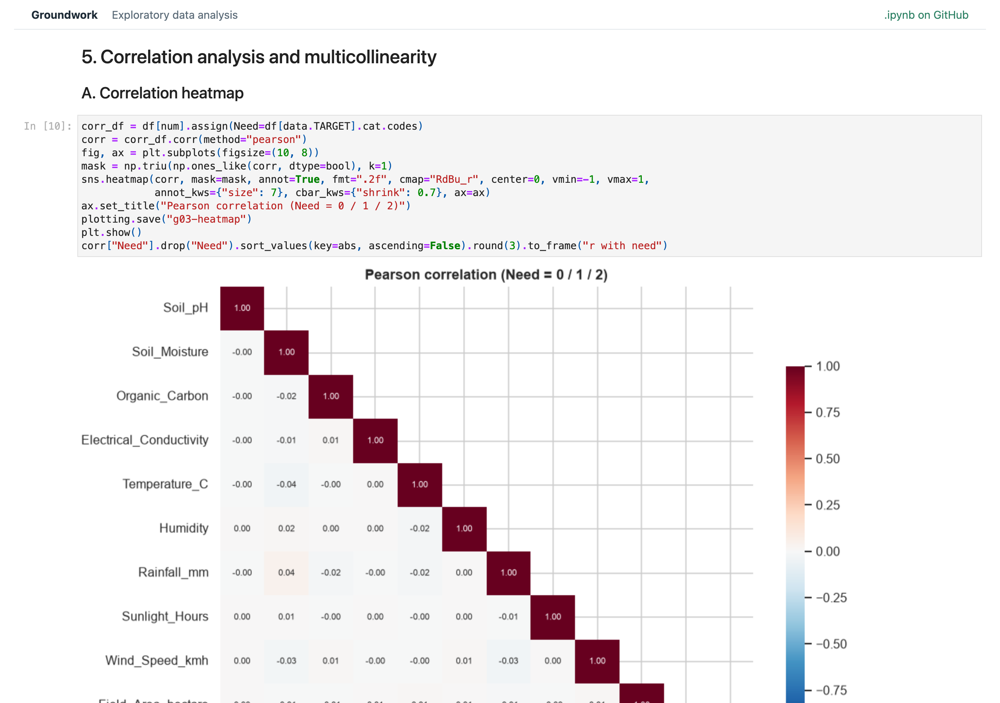
Fig. 2 · Notebook 03, correlation analysis: the heatmap code and its output.
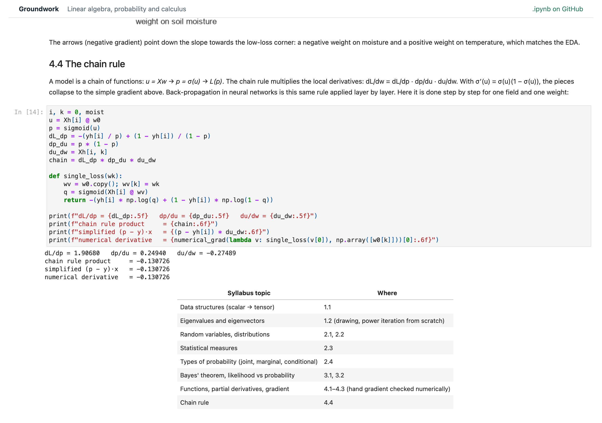
Fig. 3 · Notebook 04, the chain rule worked step by step, and the unit's syllabus table at the end of the notebook.
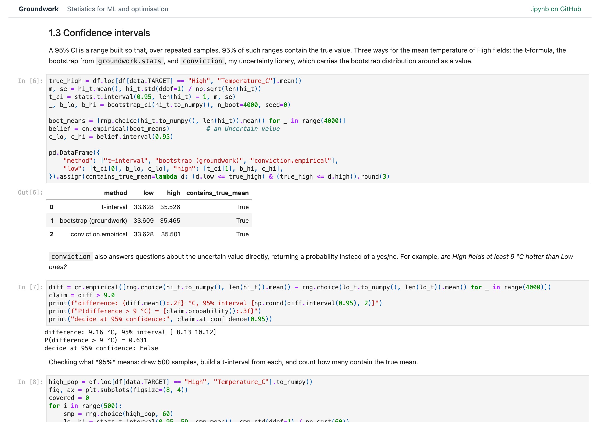
Fig. 4 · Notebook 05, confidence intervals: t-interval, bootstrap and conviction side by side.
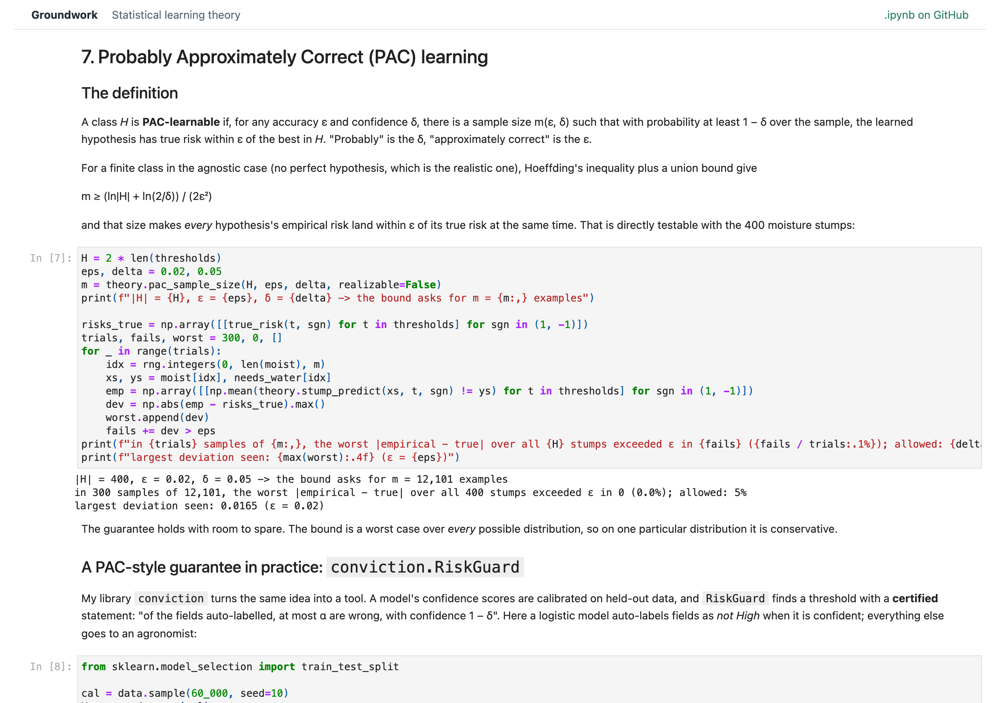
Fig. 5 · Notebook 06, PAC learning: the bound and its empirical check.
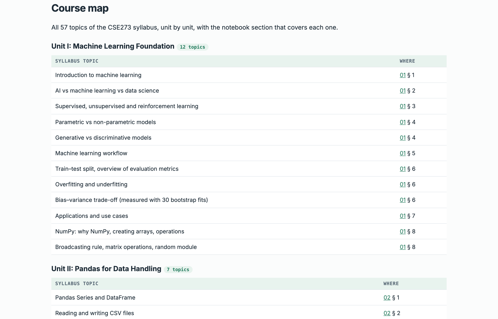
Fig. 6 · The course map on the site: every topic links to its notebook section.
03 · Unit I
Machine learning foundations and NumPy
Unit I: what machine learning is, AI vs ML vs data science, supervised / unsupervised / reinforcement learning, parametric vs non-parametric and generative vs discriminative models, the workflow, train–test evaluation, overfitting and underfitting, the bias–variance trade-off, applications, and NumPy for numerical computing. Notebook 01
The problem as a learning task
Mitchell's definition fixes the task (classify a field's irrigation need), the experience (630,000 labelled fields) and the performance measure (balanced accuracy). Supervised learning (logistic regression, 72% training accuracy on the numeric features) and unsupervised learning (K-Means with three clusters) were both run on the same data. K-Means never saw the labels, and its clusters only partly match the classes: one cluster holds most High fields, but every cluster mixes Low and Medium.
Model categories, measured
Model
Category
Stored size
Logistic regression
parametric, discriminative
1.0 KB
Gaussian Naive Bayes
parametric, generative
1.1 KB
k-NN (k = 15)
non-parametric
2,240 KB (it stores the training set)
Evaluation, overfitting and the bias–variance trade-off
A depth-8 tree on a stratified 75/25 split reaches 97.6% accuracy but only 92.2% balanced accuracy. Its High recall is 0.81 against 0.99 for Low, which is why balanced accuracy is the right metric for this data.
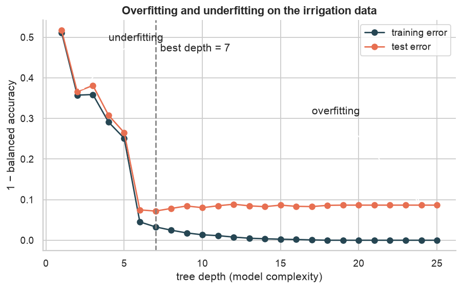
Fig. 7 · Overfitting and underfitting. Training error keeps falling with depth; test error is lowest at depth 7.Fig. 8 · Bias² and variance, measured. 30 bootstrap trees per depth: bias² falls from 0.22 to 0.02, variance rises, and the sum is lowest at depth 6.
NumPy
The notebook covers creating arrays, element-wise operations, masks and fancy indexing, the broadcasting rule (standardising a 20,000 × 3 matrix in one line, and a shape that can't broadcast), matrix operations (solving a least-squares fit with the normal equation) and the seeded random generator. A vectorised sum over 400,000 values ran 22× faster than the Python loop.
04 · Unit II
Pandas for data handling
Unit II: Series and DataFrames, reading and writing CSV, inspecting a dataset, loc vs iloc, boolean filtering, and Matplotlib: line, bar, histogram, scatter and pie charts, customisation and subplots. Notebook 02
Reading all 630,000 rows takes 0.24 s. Inspection finds no missing values and no duplicates, and shows that High is 3.3% of fields. Boolean filtering already finds a strong rule: among dry (moisture < 20%), hot (> 35 °C) fields, High is 22.8%, seven times its overall share. Grouping by growth stage and mulching shows that unmulched vegetative and flowering crops are where High lives (10.6–10.8%), compared with under 2% when mulched.
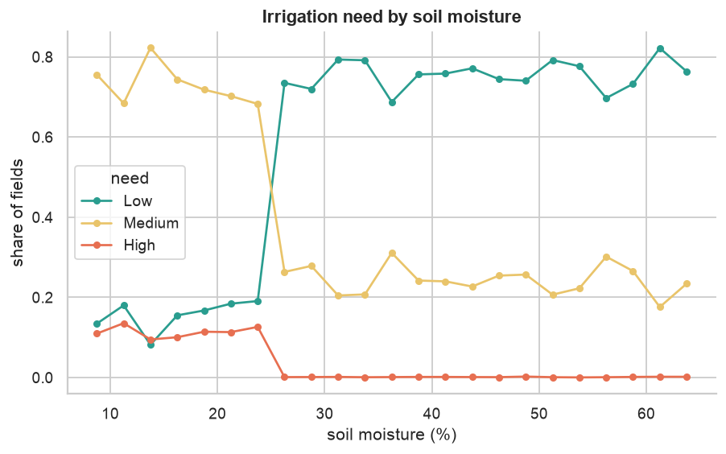
Fig. 9 · Line plot. Share of each class across soil-moisture bins: a sharp switch at about 25%.
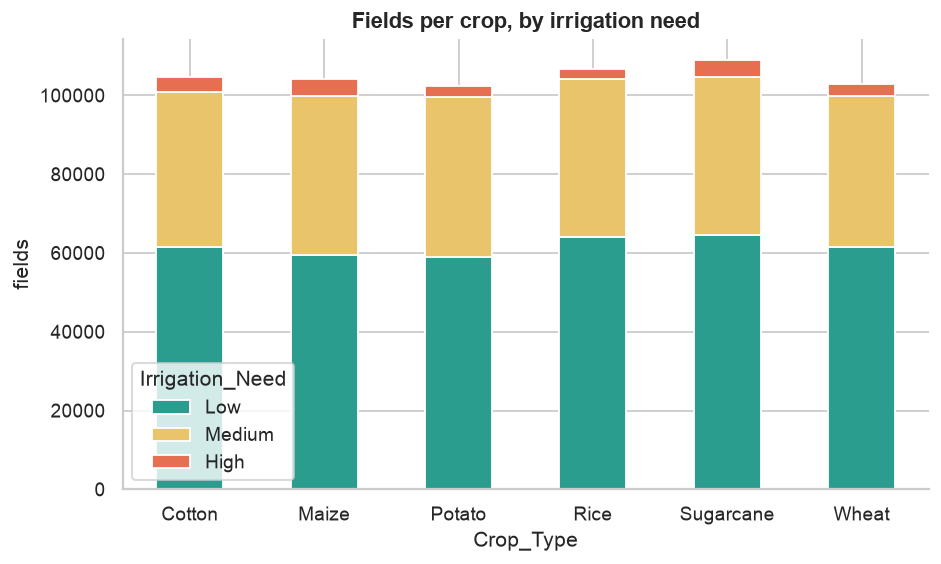
Fig. 10 · Bar plot. Fields per crop, stacked by need: crops barely differ.
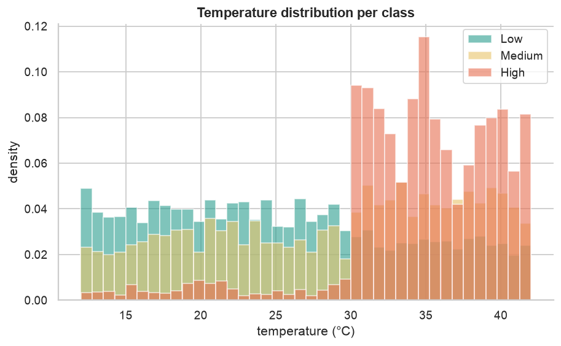
Fig. 11 · Histogram. Temperature per class: High fields are concentrated above about 30 °C.
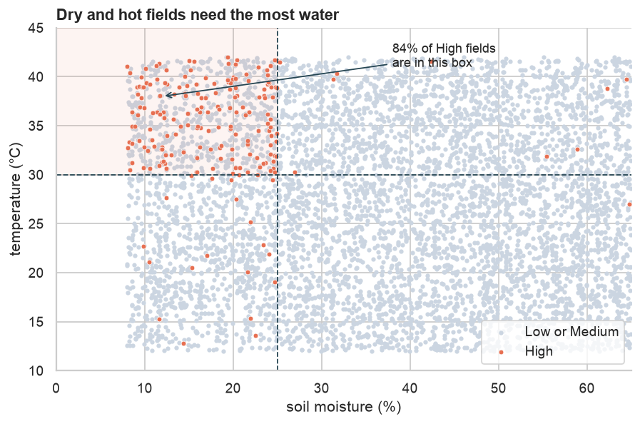
Fig. 12 · A customised plot made to make one point: 84% of High fields sit in the dry, hot box.
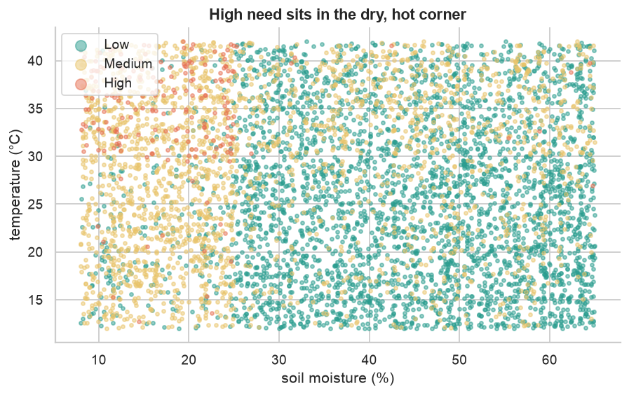
Fig. 13 · Scatter plot. High need sits in the dry, hot corner.
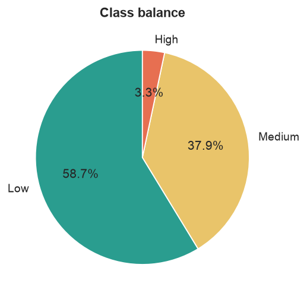
Fig. 14 · Pie chart of the class balance.
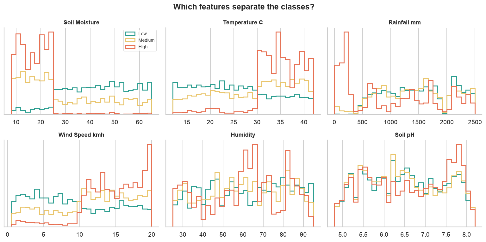
Fig. 15 · Subplots. Six features per class side by side: moisture, temperature, rainfall and wind separate the classes; humidity and pH don't.
05 · Unit III
Exploratory data analysis
Unit III: types of data, loading and inspecting, univariate and bivariate analysis, correlation and multicollinearity, skewness and kurtosis, patterns, anomalies and trends, and how EDA feeds the modelling. Notebook 03
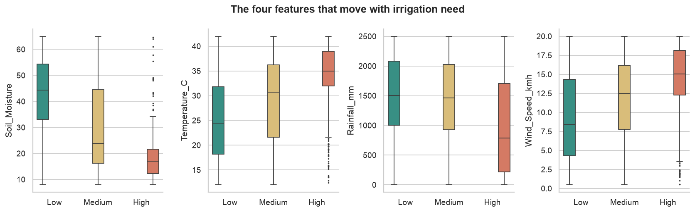
Fig. 16 · Box plots of the four features that move with need.
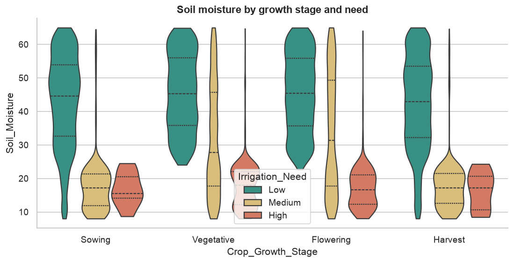
Fig. 17 · Violin plot. Moisture by growth stage and need.
Fig. 18 · Correlation heatmap. Need correlates with moisture (−0.46), wind (0.26), temperature (0.25) and rainfall (−0.11); the features hardly correlate with each other.
Multicollinearity
Every feature has a variance inflation factor between 1.000 and 1.006: the features are independent, so linear-model coefficients will be stable. A deliberately added near-copy of soil moisture shows what a real problem looks like: VIF 219 for both columns.
Skewness and kurtosis
All skewness values are within ±0.12. Excess kurtosis is between −0.94 and −1.26, close to a uniform distribution's −1.2. The features are bounded and flat, not bell-shaped.
Anomalies
Neither the IQR rule nor |z| > 3 flags a single real value. To show that the rules work, 40 sensor faults were injected into a copy (a stuck probe, Fahrenheit temperatures, negative rainfall). The z-score rule caught 39 and the IQR rule 36. The misses were values that land inside the normal range.
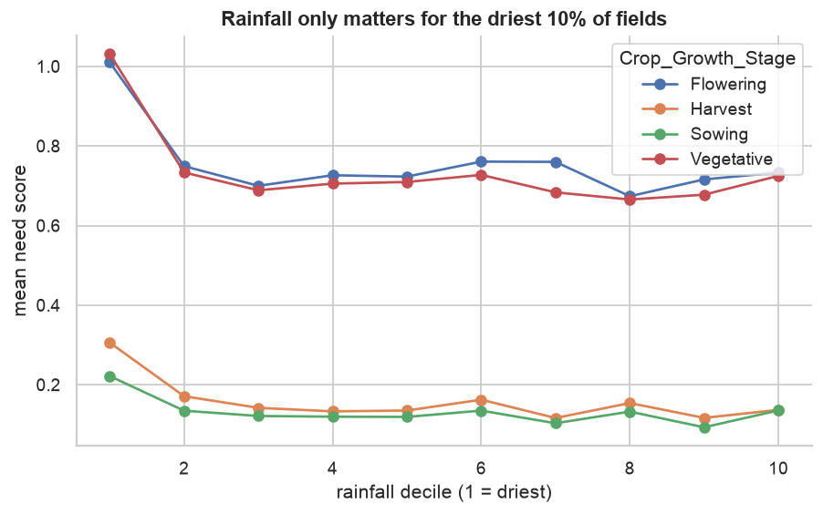
Fig. 19 · A threshold, not a slope. Need only jumps in the driest 10% of fields, and the vegetative and flowering stages sit far above the other two.
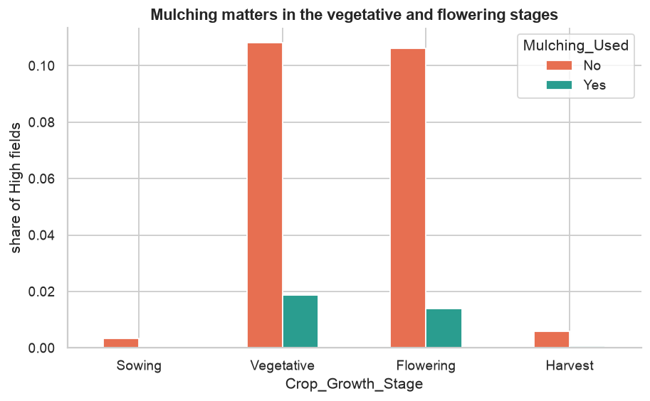
Fig. 20 · An interaction. Mulching cuts the High share from about 11% to under 2%, but only in the thirsty stages.
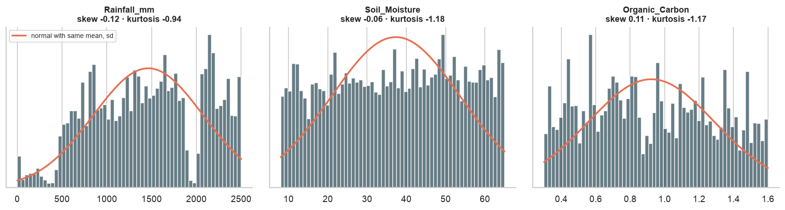
Fig. 21 · Skewness and kurtosis against a normal curve with the same mean and SD.
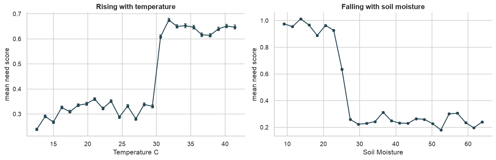
Fig. 22 · Trends. Mean need rises with temperature and falls with moisture (95% error bars).
What the EDA decided
Finding
Consequence for modelling
No missing values or duplicates
no imputation
High is 3.3% of rows
stratified splits; optimise balanced accuracy
Thresholds and a stage × mulching interaction
trees fit naturally; linear models need engineered features
Independent, bounded features
stable coefficients; scaling is safe; no outlier removal
06 · Unit IV
Linear algebra, probability and calculus
Unit IV: scalars to tensors, eigenvalues and eigenvectors, random variables and distributions, statistical measures, joint, marginal and conditional probability, Bayes' theorem and likelihood, functions, partial derivatives, the gradient and the chain rule. Notebook 04
Linear algebra
One field is a vector, the table a matrix and a stack of per-region matrices a 5 × 1000 × 11 tensor. A hand-made "dryness" score (one dot product with weights on moisture, temperature, rainfall and wind) already ranks the classes: mean −0.55 for Low, 0.67 for Medium, 2.03 for High. Power iteration written from scratch finds the top eigenvalue of the feature covariance, 1.107249, identical to np.linalg.eigh. All eigenvalues lie between 0.93 and 1.11: there is no dominant direction, confirming the independence found in the EDA.
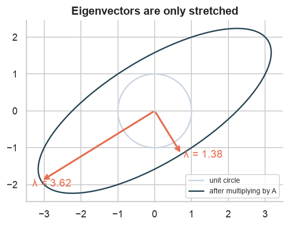
Fig. 23 · Eigenvectors are only stretched when the unit circle is multiplied by A.
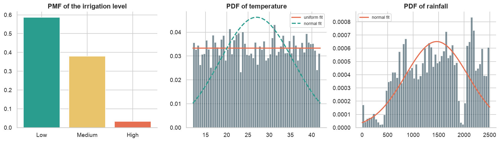
Fig. 24 · Distributions. The class PMF, and temperature against uniform and normal fits: the uniform fits.
Probability and Bayes' theorem
Quantity
Value
P(High) (prior)
0.0333
P(dry | High) (likelihood)
0.6444
P(dry) (evidence)
0.1909
P(High | dry) by Bayes' theorem / counted directly
0.1125 / 0.1125
P(High | no mulch) vs P(High | mulch)
0.0585 vs 0.0079: dependent
Fig. 25 · Updating a belief one piece of evidence at a time (naive assumption) reaches 0.51; the dashed line, counted directly, is 0.63.
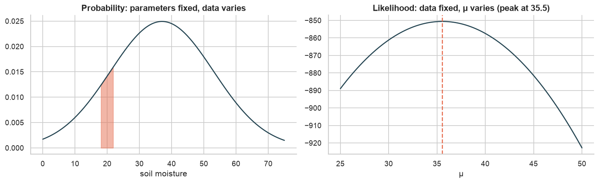
Fig. 26 · Probability vs likelihood: the same normal formula read in two directions; the likelihood peaks at the sample mean.
Calculus
The logistic-loss gradient was derived by hand, ∇L = Xᵀ(σ(Xw) − y)/n, and compared with central finite differences on all 12 parameters: the largest difference is 8.25 × 10⁻¹². The chain rule was done step by step for one field and one weight: dL/dp × dp/du × du/dw = −0.130726, the simplified (p − y)·x = −0.130726, and the numerical derivative = −0.130726.
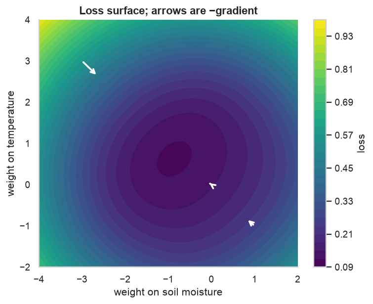
Fig. 27 · The loss surface over two weights; the white arrows (negative gradient) point to low loss: negative weight on moisture, positive on temperature.
07 · Unit V
Statistics for machine learning and optimisation
Unit V: sampling and population, hypothesis testing, confidence intervals, correlation, maximum likelihood, loss functions, convex and non-convex functions, minima and saddle points, gradient descent and its learning rate and variants, and the Momentum, RMSProp and Adam optimisers. Notebook 05
Sampling, tests and intervals
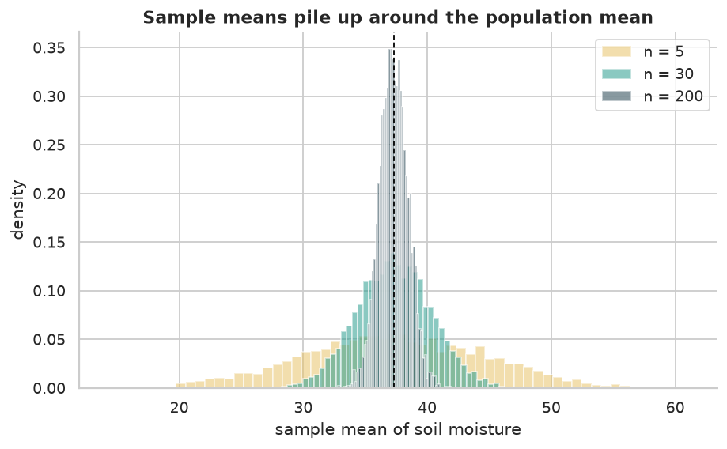
Fig. 28 · The central limit theorem, measured. Sample means of a flat feature are bell-shaped; their spread matches σ/√n (7.38 vs 7.32 at n = 5; 1.154 vs 1.158 at n = 200).
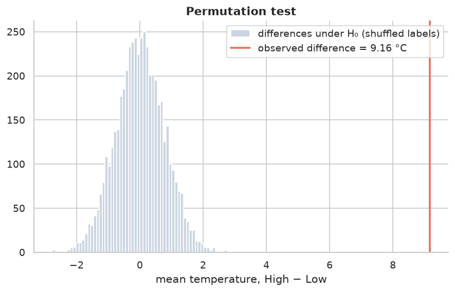
Fig. 29 · Permutation test. None of 5,000 label shuffles comes near the real 9.16 °C difference between High and Low fields.
Test
Result
Welch t-test, temperature High vs Low
t = 17.92, p = 5.6 × 10⁻⁴¹ → reject H₀
χ² test, mulching vs need
χ² = 354.8, p = 9.0 × 10⁻⁷⁸ → dependent
Welch t-test, soil pH High vs Low
p = 0.994 → keep H₀ (no difference)
Type I error over 2,000 A/A tests at α = 0.05
0.053
95% CI for mean temperature of High fields (t / bootstrap / conviction)
[33.63, 35.53] / [33.61, 35.47] / [33.63, 35.50]; all contain the true 34.57
conviction: P(High − Low difference > 9 °C)
0.631, so not decided at 95% confidence
Fig. 30 · What 95% means. 500 t-intervals from samples of 60 fields; 93.6% contain the true mean.
Estimation and losses
For temperature, the closed-form MLE (μ = 27.1160, σ = 8.5716) and a Nelder–Mead minimisation of the negative log-likelihood (27.1159, 8.5716) agree. With one broken reading of 999 among 100 moisture values, the best constant under MSE is the mean, 43.26, while MAE gives the median, 29.7: one outlier moves only the first.
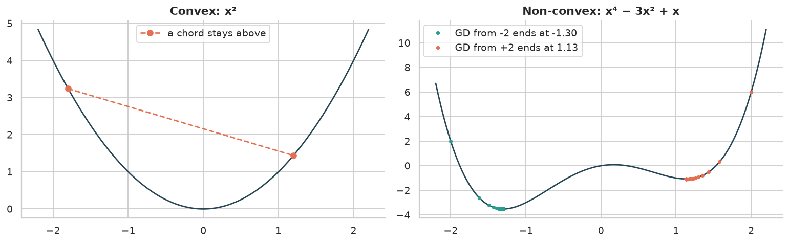
Fig. 31 · Convex vs non-convex. On the non-convex curve, GD ends in a different minimum depending on where it starts.
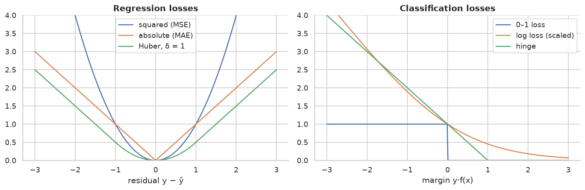
Fig. 32 · Loss functions: MSE, MAE and Huber; 0–1, log and hinge loss against the margin.
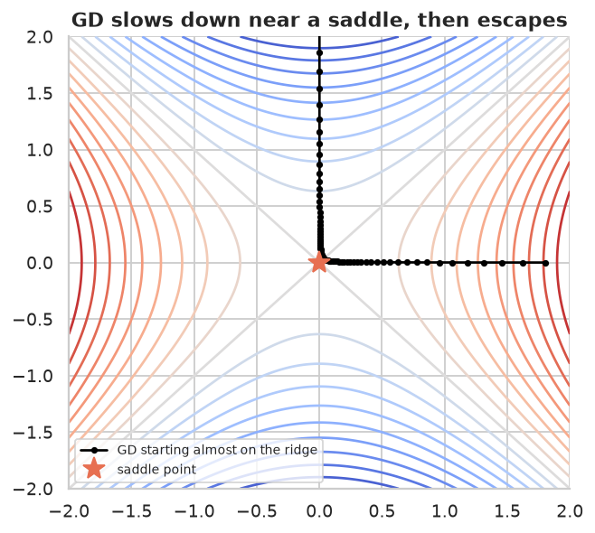
Fig. 33 · A saddle point: Hessian eigenvalues −2 and 2; gradient descent stalls near it, then escapes.
Gradient descent and the optimisers
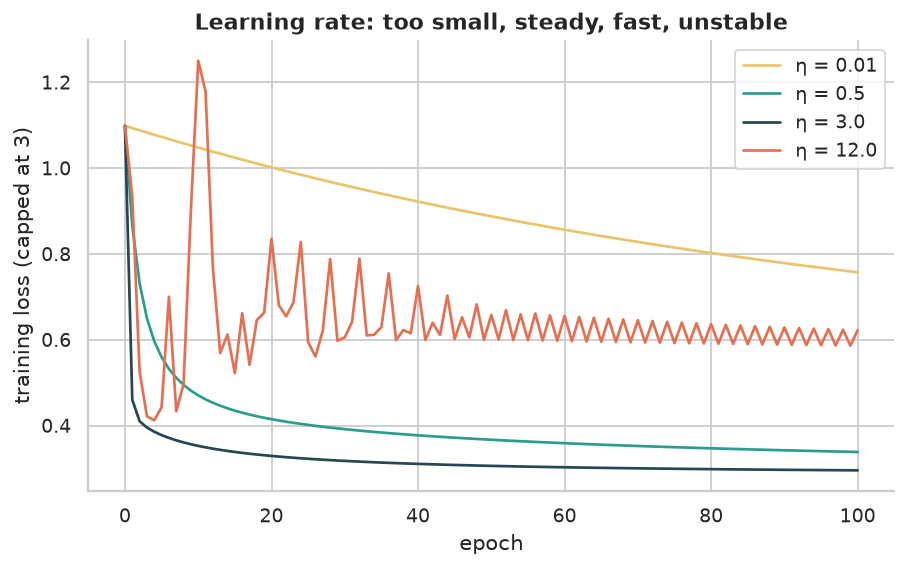
Fig. 34 · The learning rate. Too small is slow; 3.0 is fast; 12 overshoots and bounces.
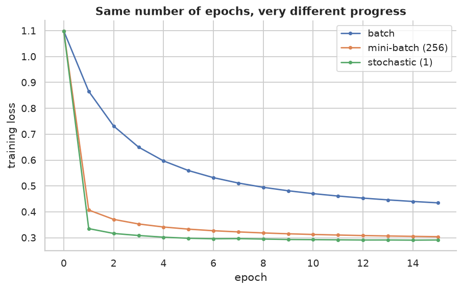
Fig. 35 · Batch, mini-batch and stochastic GD after the same 15 epochs.
Fig. 36 · Rosenbrock valley, 2,000 steps. Adam ends 3 × 10⁻⁶ from the minimum and Momentum 5 × 10⁻⁵; RMSProp bounces along the floor (0.14 away); GD crawls (0.58).
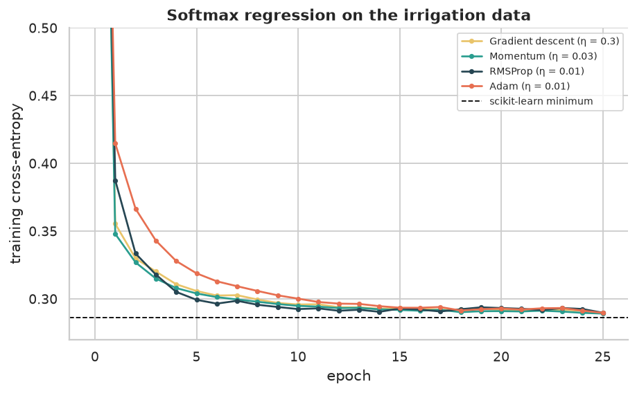
Fig. 37 · Softmax regression on the irrigation data. With tuned learning rates all four reach 0.289–0.290 against scikit-learn's 0.2865.
The honest conclusion: on a convex, well-scaled problem the learning rate matters more than the optimiser; the adaptive methods pull ahead on badly conditioned landscapes like Rosenbrock.
08 · Unit VI
Statistical learning theory
Unit VI: well-posed learning problems, the components of a learning system, the statistical learning framework, empirical risk minimisation, overfitting and generalisation, inductive bias, prior knowledge, PAC learning, sample complexity and the VC dimension, the No Free Lunch theorem, and choosing algorithms with Occam's razor. Notebook 06
With the 630,000 fields standing in for the unknown distribution, the true risk of a hypothesis can be computed exactly. For most of the unit the task is binary: does the field need water (Medium or High, 41.3%)? The first hypothesis class is the 400 decision stumps on soil moisture; the best of them ("needs water when moisture < 25.2%") has a true risk of 0.222.
Fig. 38 · ERM. With 20 examples the empirical risk (0.18) is far below the true risk (0.29); by 10,000 the gap is 0.0005.
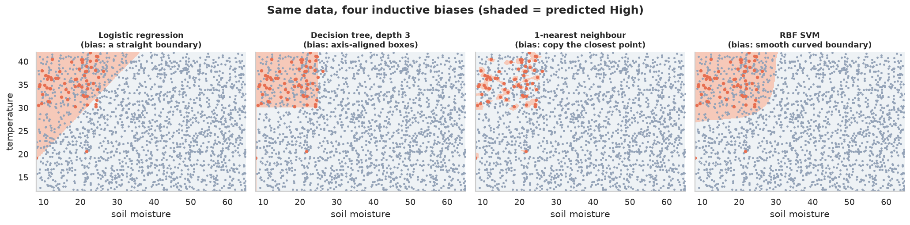
Fig. 39 · Inductive bias. Four learners, one dataset, four different answers on every unseen point.
Overfitting needs noise
Training labels
n
Depth-6 tree, test risk
Unlimited tree, empirical / test risk
clean
40,000
0.013
0.000 / 0.025
20% flipped
1,000
0.168
0.000 / 0.242
20% flipped
40,000
0.015
0.000 / 0.235
With clean labels the tree that memorises does no harm; with noisy labels it memorises the noise and more data doesn't help, while the restricted tree keeps improving.
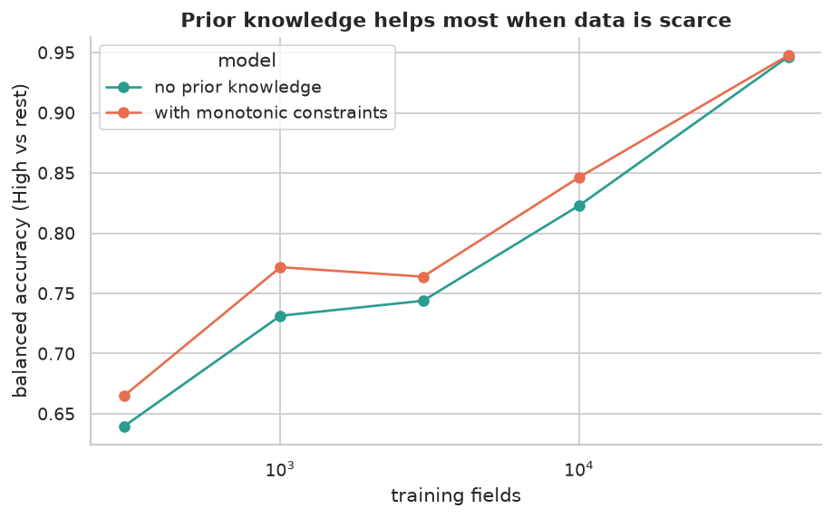
Fig. 40 · Prior knowledge. Monotonic constraints ("wetter never needs more water") add 2–4 points of balanced accuracy below 10,000 fields, and 0.1 points at 50,000.
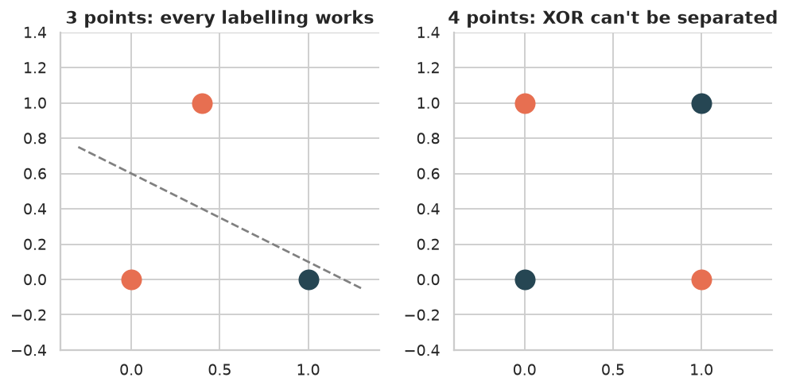
Fig. 41 · VC dimension. Lines shatter 3 points but not 4 (the XOR labellings), checked with a linear program.
PAC learning, tested
For |H| = 400, ε = 0.02 and δ = 0.05, the agnostic bound asks for m = 12,101 examples. In 300 independent samples of that size, the largest gap between empirical and true risk over all 400 stumps exceeded ε in 0 of them (the worst gap seen was 0.0165). Then a practical guarantee: my library conviction's RiskGuard, calibrated on 18,000 fields, certified that among fields auto-labelled "not High" at most 0.5% are wrong, with 95% confidence. It auto-labels 89.9% of 18,000 unseen fields, with an error rate of 0.365%.
No Free Lunch and choosing algorithms
On a world of 8 inputs, training on 4 and averaging over all 256 possible labellings of the rest, every learner scores exactly 0.5 off the training set: always-0, majority, 1-NN, a decision tree and an anti-learner. In practice the winner depends on the data: k-NN wins on moons (0.941) and circles (0.991), logistic regression on a linear problem (0.919) and the tree on the irrigation data (0.937). The one-standard-error rule picks depth 7, which is also the best depth here.
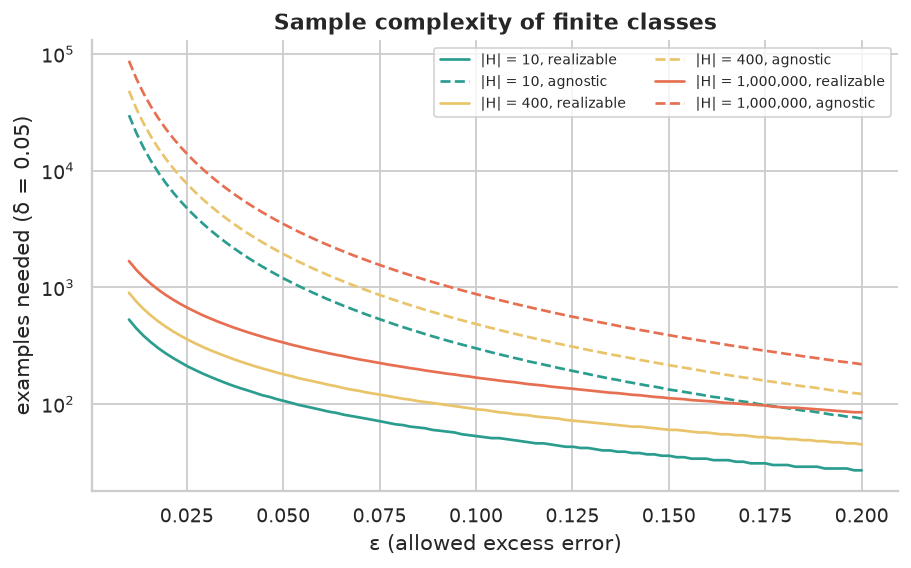
Fig. 42 · Sample complexity of finite classes, realisable and agnostic.
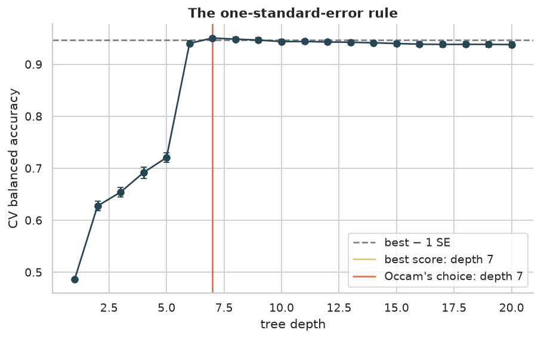
Fig. 43 · Occam's razor: the one-standard-error rule on tree depth.
09 · Syllabus mapping
Every topic of the syllabus
Generated from tools/syllabus.py, the same file that builds the course map on the website, so the two cannot disagree. "Where" gives the notebook and section.
Unit I: Machine Learning Foundation 12 topics
Notebook 01_foundations_numpy.ipynb · Machine learning foundations and NumPy
Syllabus topic
Where
Introduction to machine learning
01 § 1
AI vs machine learning vs data science
01 § 2
Supervised, unsupervised and reinforcement learning
01 § 3
Parametric vs non-parametric models
01 § 4
Generative vs discriminative models
01 § 4
Machine learning workflow
01 § 5
Train–test split, overview of evaluation metrics
01 § 6
Overfitting and underfitting
01 § 6
Bias–variance trade-off (measured with 30 bootstrap fits)
01 § 6
Applications and use cases
01 § 7
NumPy: why NumPy, creating arrays, operations
01 § 8
Broadcasting rule, matrix operations, random module
01 § 8
Unit II: Pandas for Data Handling 7 topics
Notebook 02_pandas_matplotlib.ipynb · Pandas for data handling
Every optimiser has the same interface, step(w, g), so they are interchangeable in minimize() and train_softmax(). Adam keeps a running mean of the gradient (the momentum term m) and of its square (the RMSProp term v).
Both start at zero, so early on they are biased towards zero; dividing by 1 − βᵗ corrects that. Without it the first steps would be far too small. The test suite checks that all four optimisers find the minimum of a bowl and that Adam beats plain GD on Rosenbrock.
Softmax regression and its gradient
optim.py · lines 104–110def cross_entropy(W, X, Y):
"""Mean cross-entropy loss and its gradient for softmax regression.
X has a bias column, Y is one-hot."""
P = softmax(X @ W)
loss = -np.mean(np.sum(Y * np.log(P + 1e-12), axis=1))
grad = X.T @ (P - Y) / len(X)
return loss, grad
The loss of a softmax model is the mean cross-entropy; its gradient with respect to the weight matrix has the compact form Xᵀ(P − Y)/n. Notebook 04 derives the same formula for the binary case through the chain rule, and tests/test_optim.py checks it against finite differences.
softmax() subtracts each row's maximum before exponentiating; without that, large scores overflow to infinity.
optim.py · lines 113–129def train_softmax(X, y, optimizer, epochs=30, batch_size=None, seed=0):
"""batch_size=None is full-batch GD, 1 is SGD, anything else is mini-batch."""
rng = np.random.default_rng(seed)
X = np.hstack([np.ones((len(X), 1)), X])
k = int(y.max()) + 1
Y = np.eye(k)[y]
W = np.zeros((X.shape[1], k))
bs = len(X) if batch_size is None else batch_size
history = [cross_entropy(W, X, Y)[0]]
for _ in range(epochs):
order = rng.permutation(len(X))
for start in range(0, len(X), bs):
idx = order[start:start + bs]
_, g = cross_entropy(W, X[idx], Y[idx])
W = optimizer.step(W, g)
history.append(cross_entropy(W, X, Y)[0])
return W, np.array(history)
One function covers all three gradient-descent variants: batch_size=None is batch GD, 1 is SGD, anything else is mini-batch; the data is reshuffled every epoch.
Shattering and the VC dimension
theory.py · lines 26–32def linearly_separable(X, y):
"""Is there w, b with y_i (w.x_i + b) >= 1 for all i? Solved as an LP feasibility problem."""
X = np.asarray(X, dtype=float)
s = np.where(np.asarray(y) > 0, 1.0, -1.0)
A = -s[:, None] * np.hstack([X, np.ones((len(X), 1))])
res = linprog(np.zeros(X.shape[1] + 1), A_ub=A, b_ub=-np.ones(len(X)), bounds=[(None, None)] * (X.shape[1] + 1))
return res.status == 0
"Can a line separate these labels?" is a linear-programming feasibility question: find w and b such that every point is on the right side with margin 1. If the LP is feasible, the labelling is realisable.
shattered() tries every one of the 2ⁿ labellings; the class shatters the points only if all of them are feasible. For four corners of a square, the two XOR labellings fail, so lines in the plane have VC dimension 3.
theory.py · lines 35–40def shattered(X):
"""Can lines in the plane realise every one of the 2^n labelings of these points?"""
X = np.asarray(X, dtype=float)
failed = [labels for labels in product([0, 1], repeat=len(X))
if len(set(labels)) > 1 and not linearly_separable(X, labels)]
return len(failed) == 0, failed
PAC sample size and ERM
theory.py · lines 13–18def pac_sample_size(h_size, eps, delta, realizable=True):
"""Training examples needed so that, with probability >= 1 - delta, the learned
hypothesis has true error <= eps (realizable) or within eps of the best (agnostic)."""
if realizable:
return int(np.ceil((np.log(h_size) + np.log(1 / delta)) / eps))
return int(np.ceil((np.log(h_size) + np.log(2 / delta)) / (2 * eps**2)))
The two classic finite-class bounds: realisable, (ln|H| + ln(1/δ))/ε, and agnostic, (ln|H| + ln(2/δ))/(2ε²). Notebook 06 uses the agnostic one because no stump classifies every field correctly, and checks it on 300 samples.
theory.py · lines 49–58def erm_stump(x, y, thresholds=None):
"""Empirical risk minimisation: pick the stump with the lowest training error."""
thresholds = np.unique(x) if thresholds is None else thresholds
best = (np.inf, None, None)
for t in thresholds:
for sign in (1, -1):
risk = np.mean(stump_predict(x, t, sign) != y)
if risk < best[0]:
best = (risk, t, sign)
return best
Resample the data with replacement, recompute the statistic, and read the interval off the quantiles of the resampled values. The test suite checks that it covers the true mean in at least 50 of 60 repeated experiments.
11 · Testing
What was checked
Three layers: unit tests of the package, checks inside the notebooks that compare each from-scratch result with an independent answer, and a full execution of every notebook on a fresh kernel.
1. Unit tests (pytest)
Test
Checks
Result
test_optim.py
every optimizer finds the minimum of a bowl[opt0]
Pass
test_optim.py
every optimizer finds the minimum of a bowl[opt1]
Pass
test_optim.py
every optimizer finds the minimum of a bowl[opt2]
Pass
test_optim.py
every optimizer finds the minimum of a bowl[opt3]
Pass
test_optim.py
gd diverges when the learning rate is too big
Pass
test_optim.py
rosenbrock gradient matches finite differences
Pass
test_optim.py
adam gets closer to rosenbrock minimum than plain gd
Pass
test_optim.py
softmax gradient is correct
Pass
test_optim.py
softmax regression learns separable blobs
Pass
test_stats_theory.py
mle normal matches numpy population formulas
Pass
test_stats_theory.py
mle minimises the negative log likelihood
Pass
test_stats_theory.py
bootstrap interval contains the true mean most of the time
Pass
test_stats_theory.py
huber is quadratic inside and linear outside
Pass
test_stats_theory.py
pac bounds grow with hypotheses and shrink with eps
Pass
test_stats_theory.py
lines shatter three points but not four
Pass
test_stats_theory.py
erm stump finds a perfect threshold
Pass
$ pytest -q................ [100%]
16 passed in 1.62s
2. Checks inside the notebooks
What
Compared with
Result
Hand-derived logistic gradient
central finite differences, 12 parameters
max difference 8.25 × 10⁻¹²
Chain rule, one weight
simplified formula and numerical derivative
all −0.130726
Power iteration
np.linalg.eigh
λ = 1.107249 both, |cos| = 1.0
Normal MLE (closed form)
Nelder–Mead on the negative log-likelihood
agree to 4 decimals
Bayes' theorem
direct counting
0.1125 both
Four optimisers
scikit-learn L-BFGS on the same loss
within 0.004
PAC bound
300 samples of the bound's size
0 failures (5% allowed)
RiskGuard certificate
18,000 unseen fields
0.365% error, promised ≤ 0.5%
Type I error at α = 0.05
2,000 A/A tests
0.053
3. Notebook execution
Every notebook was executed from top to bottom on a fresh kernel with jupyter nbconvert --execute, on Python 3.12 with NumPy 2.5, pandas 3.1 and scikit-learn 1.9, with no errors. Reading the outputs against the text found and fixed several wrong claims before they were published:
The first bias–variance experiment used a target the features can't predict; it was replaced with one they can.
A pandas 3 change made scipy.stats.zscore return an array, so a per-column outlier count silently became a total. It now uses a pandas z-score.
The first optimiser comparison used untuned learning rates and suggested an order that a fair sweep didn't support.
The overfitting demo showed no overfitting at all on the clean, nearly noise-free labels, so the noisy-label version was added.
The first "linear" toy dataset turned out not to be linear.
pip install -e ".[dev]", download the competition data into data/, then pytest and jupyter lab notebooks/
Run on Kaggle
open a notebook with the competition attached; the first cell installs the package from GitHub
Rebuild the site
python tools/build_site.py
The competition data is not in the repository: Kaggle's rules don't allow redistributing it.
What I learned
A theorem is easier to trust after you've watched it hold. Seeing the PAC bound survive 300 samples and the No Free Lunch average come out at exactly 0.5 taught me more than the proofs alone.
Check every claim against the output. Several sentences I wrote before running the code turned out to be wrong; the data has the final say.
Real data is boring in useful ways. No missing values, no outliers, independent features: those are findings, and they changed which methods were worth using.
Optimisers are simple; learning rates are not. Four optimisers fit in 60 lines; choosing their learning rates fairly took a sweep.
Imbalance changes everything downstream. 3.3% High fields is why balanced accuracy matters, and why my first Kaggle model stopped at 0.960 (fixed in the CSE274 project).
Possible extensions
A learning-rate schedule for the optimisers, to close the last gap to the true minimum.
Conformal prediction sets for all three classes, not just "not High".
The same theory experiments on real, noisier field data.